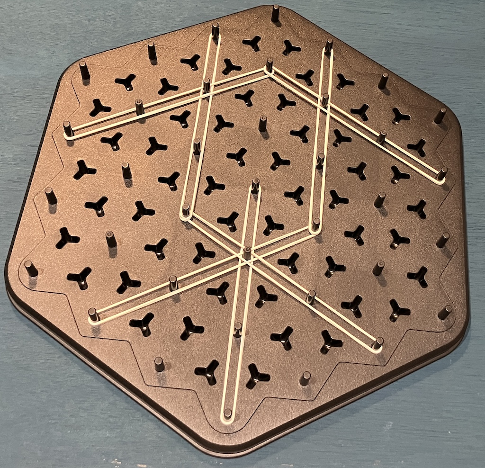
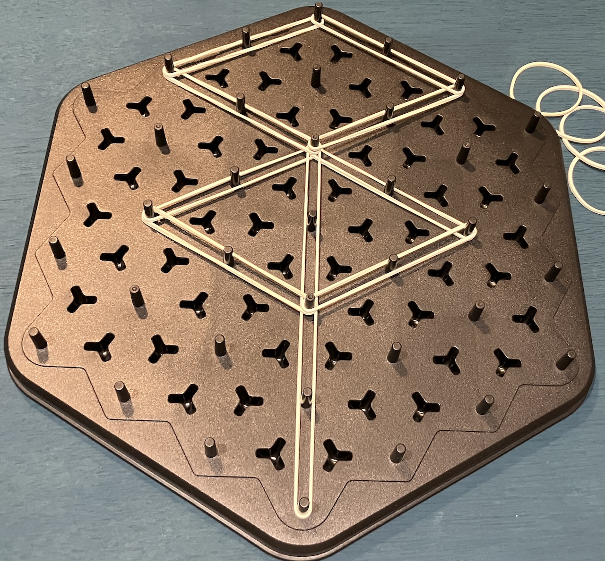
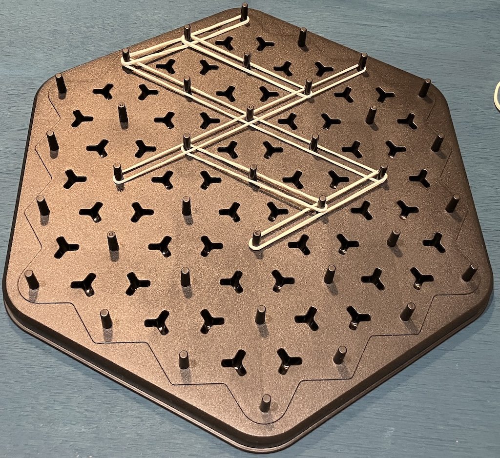
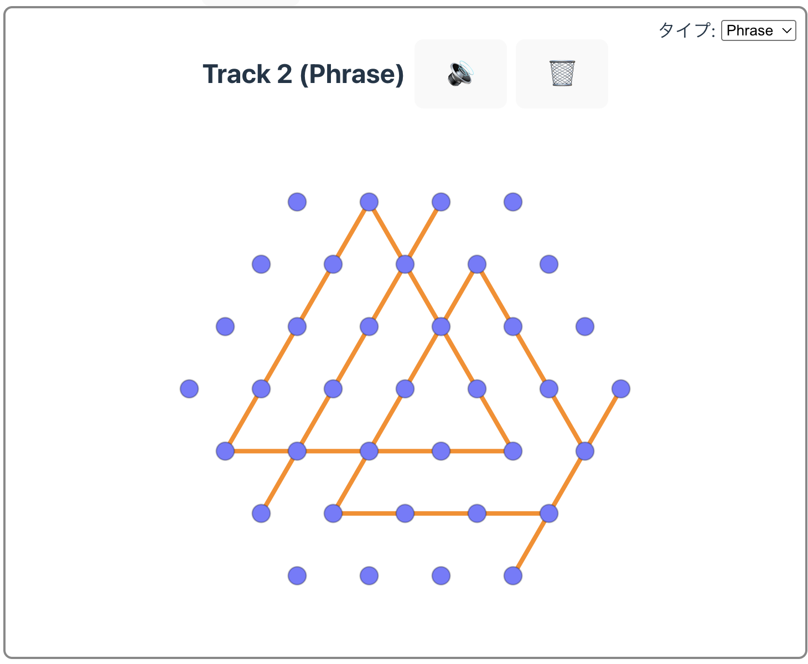

パズルを遊んでいたら、いつの間にか音楽ができていた。そんな体験。

概要
Pinboard Band は、ピンボードに輪ゴムを張って図形を作ると、
その形がリズムやメロディに変わる“図形で作曲する”体験です。
「音楽を作る」よりも、「遊んでいたら音楽になっていた」
そんな自然なつながりを目指しています。

背景と発想
この作品は「遊び」と「音楽」をつなぐ試みとして生まれました。
- ピンボードに輪ゴムを張ると、形（パターン）ができます
- その形がリズムや音階に変換されます
- 図形を重ねると、いつの間にか音楽ができていきます
遊ぶことそのものが音楽になる──
パズルを遊ぶ = 音楽を作るという発想の実験です。

あそび方
1. ピンボードに輪ゴムを張る
お題に合った形を作ったり、自由な形を作ったりします。
（「輪ゴム7つで正三角形を4つ作って！」など）
2. 作った形をブラウザアプリに入力する
（入力方法は、手入力またはカメラ認識の想定）
3. リズムやフレーズが流れる
形の特徴がリズムやメロディとして再生されます。

制作進捗
- 第１段階：図形から音楽を作るロジックのプロトタイピング（現在）
- 第２段階：カメラ認識機能の開発（〜2025年末）
- 第３段階：スタンドアロン版の開発（〜2026年末）